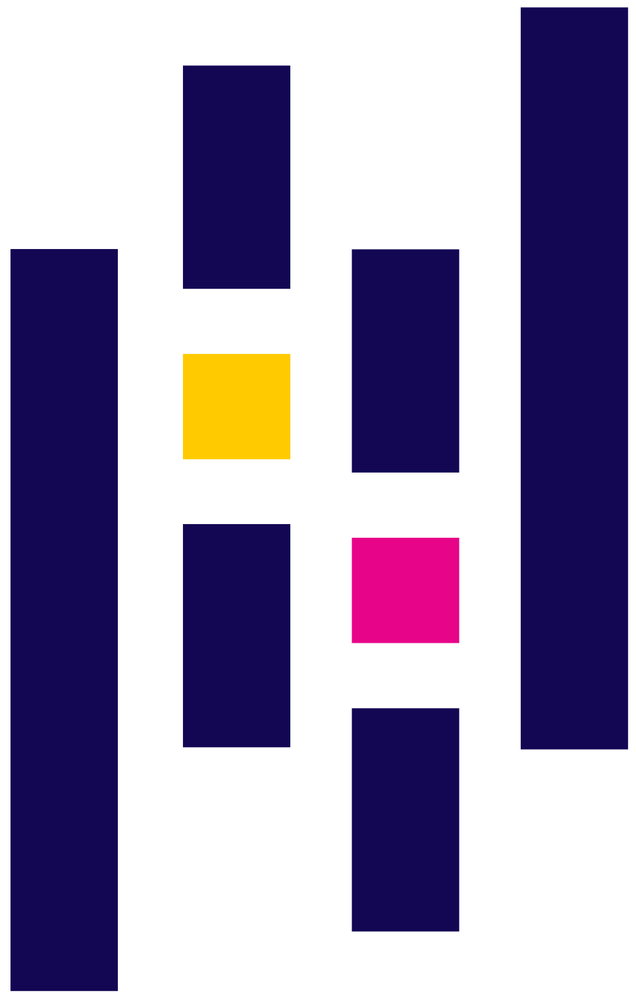

Retrieval Augmented Generation, Large Language Models and Knowledge
Bases
Building a RAG System with LangChain and ICD-11 Data
Marco Cremaschi
Tutors
David Chieregato
Fabio D'Adda
Davide Ditolve
LAB Agenda
Part 1: The Fundamentals (RAG &
ICD-11)
Part 2: Prerequisites,
Setup, Data Loading & Processing
Part 3: Embeddings & Vector
Stores
Part 4: Building the RAG Chain
Part 5: Querying the RAG System
Conclusion & Q&A
Part 1: The Fundamentals (RAG &
ICD-11)
What is RAG?
Retrieval-Augmented Generation (RAG)
is an AI framework for improving the quality of LLM-generated
responses by grounding the model on external sources of knowledge
It combines a retriever (to find relevant information) with a
generator (an LLM to craft an answer)
The Knowledge Base: ICD-11
The International Classification of Diseases, 11th Revision (ICD-11)
is the global standard for diagnostic health information
The ICD-11 now catalogues roughly
0
distinct clinical concepts, giving health professionals an
unprecedented breadth of diagnostic detail
This chart shows the most common parent-level categories in the dataset.
Column Definitions
code
The unique alphanumeric identifier for a specific disease or disorder.
title
The official, human-readable name of the condition.
definition
A detailed clinical description of the disorder.
Column Definitions
inclusions
Other conditions or synonyms that are included within this diagnostic category.
exclusions
Conditions that are explicitly NOT diagnosed under this code.
Column Definitions
diagnosticCriteria
The specific criteria that must be met for a definitive diagnosis.
category_code
A broader, parent-level category that groups together related codes.
Set up
We begin by setting up a
environment. This involves installing all the necessary libraries
that form the building blocks of our application
ENV
Our Tools: The Libraries
Python's power comes from its vast collection of
libraries—pre-packaged code that we can use. Here are the key ones
for our project:
LangChain
: The main framework for creating applications with LLMs
Our Tools: The Libraries
Pandas
:
A powerful tool for reading and manipulating data, like our CSV
file
Chroma
:
A special database (vector store) for storing and searching our
text data efficiently
Google GenAI
:
The library that lets us connect to and use Google's powerful AI
models
What is an import Statement?
Think of libraries as toolboxes. An
import statement is how we
tell Python to open a toolbox and take out a specific tool to use
# This line says: "From the langchain toolbox, get me the 'Document' tool."
from langchain_core.documents import Document
# Now we can use the 'Document' tool in our code.
my_doc = Document(page_content="This is a sample document.")
Without importing, Python wouldn't know what a Document is
Local Environment vs. Google Colab
For this LAB, both work perfectly fine!
Colab
is often easier to start with
Setup - Step 1.1: Installing Libraries
We use >pip to install
LangChain and its related packages, including the integration for
Google's AI models and the Chroma
vector store
Hard-coding sensitive information like API keys directly in the
source code is a major security risk. A best practice is to load
them from environment variables, which keeps them separate from the
code
The python-dotenv library
helps manage this by loading variables from a
.env file for local
development
First Code: Configuring the API Key
It's time to write our first lines of Python. The most crucial first
step is to authenticate our script with Google's AI services. This
code block handles that by securely loading our API key, which is
like a password for our program
import os
import getpass
from dotenv import load_dotenv
# Load environment variables from .env file (optional)
load_dotenv()
# Get Google API Key
if "GOOGLE_API_KEY" not in os.environ:
os.environ["GOOGLE_API_KEY"] = getpass.getpass("Enter your Google API Key: ")
Theory: Loading External Data
The first step in the
RAG process is "Retrieval". This
requires loading our external knowledge into a format the
application can use. LangChain provides
Document objects for this,
which contain text
page_content and associated
metadata
We will write a custom function using
pandas to read our specific
CSV file and transform each row into a
LangChain Document
Theory: Why Split Text for Retrieval?
Once raw documents are loaded, they often need to be broken down
into smaller, manageable chunks. This is crucial for effective
retrieval because:
The goal is to split text intelligently, maintaining semantic
coherence within each chunk while ensuring no crucial information is
cut off mid-sentence or mid-paragraph
Theory: The Goal of Splitting
Relevance: LLMs have context windows. Sending too
much irrelevant information can dilute the useful context. Smaller
chunks mean the retriever finds more
precise relevant passages
Efficiency: Embedding and retrieving smaller
chunks is faster and uses less memory
Granularity: Ensures that retrieved information
is at the right level of detail for the LLM to synthesize
Our Data Format: The CSV File
Our ICD-11 knowledge is stored in a
CSV (Comma-Separated Values) file. It's one of the
simplest and most common ways to store tabular data
Think of it as a plain text spreadsheet. Each line is a row, and
commas separate the columns. Because it's so simple, it's incredibly
easy for almost any programming language, including Python, to read
and work with
Step 1.3: Implementing the CSV Loader
The function in the next slide reads the
icdchapter6.csv file,
iterates through each row, and creates a
Document object with
formatted content and metadata
Step 1.3: Implementing the CSV Loader
The function in the next slide reads the
icdchapter6.csv file,
iterates through each row, and creates a
Document object with
formatted content and metadata
In our loader, we combined the code,
title, and definition for a reason
Code & Title: These provide clear, structured
identifiers. They are perfect for when the LLM needs to give a
precise, factual answer
Definition: This is the most important part for
our retriever. It contains the rich, descriptive text that allows
for effective semantic search, helping the system
find relevant concepts even if the query doesn't use exact
keywords
Why These Data Fields? Structuring the Context
By combining them, we create a comprehensive
Document that gives the LLM
everything it needs: a unique ID, a clear label, and a detailed
description to inform its answer
Lab Checkpoint 1
Your script should now handle installation, API keys, and data
loading.
import os, getpass
from dotenv import load_dotenv
import pandas as pd
from langchain_core.documents import Document
# API KEY SETUP
load_dotenv()
if "GOOGLE_API_KEY" not in os.environ:
os.environ["GOOGLE_API_KEY"] = getpass.getpass("Enter Google API Key: ")
# DATA LOADING FUNCTION
def load_icd11_from_csv(file_path: str) -> list[Document]:
try:
df = pd.read_csv(file_path, delimiter=';'); docs = []
for i, row in df.iterrows():
c = (f"ICD-11 Code: {row['code']}\\n"
f"Title: {row['title']}\\n"
f"Definition: {row['definition']}")
docs.append(Document(page_content=c, metadata={"code": row['code'], "title": row['title']}))
return docs
except FileNotFoundError: return []
# EXECUTE LOADING
icd11_documents = load_icd11_from_csv('icdchapter6.csv')
if icd11_documents:
print(f"Loaded {len(icd11_documents)} documents.")
icd11_chunks = icd11_documents
else:
print("Failed to load documents.")
Part 3: Embeddings & Vector
Stores
Theory: Embeddings & Vector Stores
Now that we have our data loaded, we need to make it searchable.
We'll do this by converting our text into numerical representations
and storing them in a specialized database
Theory: Creating Text Embeddings
To find relevant information, we can't just match keywords. We
need to understand the meaning or
semantic content of the text.
Embeddings are numerical vectors that represent
this semantic meaning. An embedding model converts our text
documents into these vectors, placing similar concepts close to
each other in vector space.
A Note on Debugging
Errors are a normal part of coding! Debugging is
the process of finding and fixing them. No one writes perfect code
on the first try.
The simplest yet most powerful tool in your debugging toolkit is the
print() statement. If you're
not sure what a variable holds or if a line of code is being
reached, just print it! In Colab, the output will appear right below
the code cell.
A Note on Debugging
You can print text, variables or both. Here are some examples:
print("just a literal text")
print(variable_name)
print(f"String interpolation: {variable_name}")
Step 2.1: Initializing the Embedding Model
We'll use Google's
embedding-001 model via the
GoogleGenerativeAIEmbeddings
class in LangChain to perform this conversion
from langchain_google_genai import GoogleGenerativeAIEmbeddings
# Initialize the embedding model
embeddings = GoogleGenerativeAIEmbeddings(
model="models/embedding-001"
)
print("Embedding model initialized.")
Theory: Indexing in a Vector Store
Searching through thousands of embeddings one-by-one would be very
slow. A Vector Store is a specialized database
designed to store and efficiently search these high-dimensional
vectors using fast algorithms like Approximate Nearest Neighbor
(ANN) search
We will use
Chroma,
a popular open-source vector store that runs in memory but can be
persisted to disk to avoid re-processing
Important notes on vector stores
The embedding process requires lot of computation power, and we do
not want to repeat each time
For this example we are going to store on a local disk the
vectorstore, so we can retrieve multiples times without reprocessing
the embeddings
Step 2.2: Creating the Vector Store
This code creates a new Chroma database from our documents and
embeddings if one doesn't already exist, or loads the existing one
from disk
from langchain_chroma import Chroma
import os
persist_directory = "./chroma_db_workshop"
# Load from disk if it exists, otherwise create it
if os.path.exists(persist_directory):
vectorstore = Chroma(
persist_directory=persist_directory,
embedding_function=embeddings
)
else:
vectorstore = Chroma.from_documents(
documents=icd11_chunks,
embedding=embeddings,
persist_directory=persist_directory
)
# The retriever is our interface for searching
retriever = vectorstore.as_retriever()
print("Retriever is ready.")
LAB Checkpoint 2
Your script should now include the embedding model and vector store
creation.
# ... (previous code from Checkpoint 1) ...
from langchain_google_genai import GoogleGenerativeAIEmbeddings
from langchain_chroma import Chroma
# ... (API Key and Data Loading code) ...
icd11_chunks = load_icd11_from_csv('icdchapter6.csv')
print(f"Loaded {len(icd11_chunks)} chunks.")
# EMBEDDING MODEL
embeddings = GoogleGenerativeAIEmbeddings(model="models/embedding-001")
# VECTOR STORE
persist_directory = "./chroma_db_workshop"
if os.path.exists(persist_directory) and os.listdir(persist_directory):
vectorstore = Chroma(persist_directory=persist_directory, embedding_function=embeddings)
print("Loaded existing vector store.")
else:
vectorstore = Chroma.from_documents(documents=icd11_chunks, embedding=embeddings, persist_directory=persist_directory)
print("Created new vector store.")
retriever = vectorstore.as_retriever()
print("Retriever is ready.")
Part 4: Building & Querying the RAG
Chain
Building & Querying the RAG Chain
Now we have all the components: a retriever to fetch data and an LLM
to generate answers. The final step is to orchestrate them into a
single, cohesive application
Theory: Composing with LCEL
LangChain Expression Language (LCEL) is a
declarative way to compose components into chains. The pipe (`|`)
operator connects each step, passing the output of one step as the
input to the next
Our chain will be:
The user's question retrieves context
The question and context populate a prompt
The prompt is sent to the LLM
The LLM's response is parsed into a clean string
The Art of the Prompt
A prompt is the set of instructions we give to the
LLM. It's the most direct way we have to control its behavior
Prompt Engineering is the skill of crafting these
instructions to get the exact output you want. A good prompt is
clear, specific, and provides all the necessary context for the
model to succeed
How RAG Uses a Prompt Template
We don't write a new prompt for every user question. Instead, we use
a template. LangChain dynamically inserts the
retrieved context and the user's original question into the
placeholders of this template
# Our template has two placeholders: {context} and {question}
template = """Use the retrieved context to answer the question.
Context: {context}
Question: {question}"""
# LangChain will automatically fill these in before sending to the LLM
Giving Clear Instructions
The most important part of our prompt is the instructions that guide
the LLM's behavior. Consider this line:
"If you don't know the answer, just say that you don't know."
This single instruction is critical for building a trustworthy
system. It explicitly tells the LLM not to guess or "hallucinate" an
answer if the information isn't in the retrieved context. This makes
our RAG system more reliable and factual
Step 3.1: Constructing the Chain
We define a prompt template and then pipe together the retriever,
the prompt, the LLM, and an output parser.
from langchain_google_genai import ChatGoogleGenerativeAI
from langchain_core.prompts import ChatPromptTemplate
from langchain_core.output_parsers import StrOutputParser
from langchain_core.runnables import RunnablePassthrough
# Initialize the Language Model (LLM)
llm = ChatGoogleGenerativeAI(model="gemma-3-1b-it", temperature=0.7)
# Define the prompt template
template = """You are a helpful assistant for ICD-11.
Use the retrieved context to answer the question.
If you don't know the answer, just say that you don't know.
Context: {context}
Question: {question}
Answer:"""
prompt = ChatPromptTemplate.from_template(template)
# Construct the RAG chain with LCEL
rag_chain = (
{"context": retriever, "question": RunnablePassthrough()}
| prompt
| llm
| StrOutputParser()
)
print("RAG chain constructed.")
Part 5: Querying the RAG System
Querying the System
The rag_chain we created is
now a runnable object. We can use its
invoke() method to pass in a
user query. This triggers the entire sequence of operations we
defined, returning the final, context-aware answer from the LLM
Step 3.2: Putting it to the Test
We define a helper function and then ask our RAG system a question
that is inside its knowledge base and one that is outside of it.
def ask_rag_system(query: str):
print(f"\\n--- Asking: '{query}' ---")
response = rag_chain.invoke(query)
print(f"Answer:\\n{response}")
# Query 1: Specific question
ask_rag_system("What is the ICD-11 code for 'Dissociative identity disorder'?")
# Query 2: Off-topic question
ask_rag_system("What is the capital of France?")
Final Code: Complete RAG System
This is the entire script for our RAG system, from start to finish.
import os, getpass
from dotenv import load_dotenv
import pandas as pd
from langchain_core.documents import Document
from langchain_google_genai import GoogleGenerativeAIEmbeddings, ChatGoogleGenerativeAI
from langchain_chroma import Chroma
from langchain_core.prompts import ChatPromptTemplate
from langchain_core.output_parsers import StrOutputParser
from langchain_core.runnables import RunnablePassthrough
# Setup
load_dotenv()
if "GOOGLE_API_KEY" not in os.environ:
os.environ["GOOGLE_API_KEY"] = getpass.getpass("Enter Google API Key: ")
# Data Loading ... (condensed function)
def load_icd11_from_csv(file_path: str):
try:
df=pd.read_csv(file_path,delimiter=';');docs=[]
for i, r in df.iterrows():
c = f"Code: {r['code']}\\nTitle: {r['title']}\\nDef: {r['definition']}"
docs.append(Document(page_content=c, metadata={"code": r['code']}))
return docs
except FileNotFoundError: return []
icd11_chunks = load_icd11_from_csv('icdchapter6.csv')
# Embeddings & Vector Store
embeddings = GoogleGenerativeAIEmbeddings(model="models/embedding-001")
vectorstore = Chroma(persist_directory="./chroma_db_workshop", embedding_function=embeddings)
retriever = vectorstore.as_retriever()
# RAG Chain
llm = ChatGoogleGenerativeAI(model="gemma-3-1b-it", temperature=0.7)
template = "Context: {context}\\nQuestion: {question}\\nAnswer:"
prompt = ChatPromptTemplate.from_template(template)
rag_chain = ({"context": retriever, "question": RunnablePassthrough()} | prompt | llm | StrOutputParser())
# Querying
def ask_rag_system(query: str):
response = rag_chain.invoke(query)
print(f"\\nQuery: {query}\\nAnswer: {response}")
ask_rag_system("What is 'Dissociative identity disorder'?")
ask_rag_system("What is the capital of France?")
Set up a Python environment...
Loaded external knowledge...Documents
Generated semantic embeddings...
Indexed these embeddings...
Constructed a complete RAG chain...
Queried our system...
Beyond Basics: Limitations & Next Steps
While powerful, RAG systems are not without their challenges.
Understanding their limitations is key to building more robust and
reliable applications.
Limitations of Basic RAG
Our current RAG system is a solid foundation, but basic RAG can
face issues:
Context Window Issues: Even with splitting, very
long or complex retrieved contexts might still exceed LLM limits
or dilute relevance.
"Lost in the Middle": LLMs sometimes pay less
attention to information in the middle of a long context.
Retrieval Quality: If the retriever doesn't find
the *most* relevant chunks, the LLM's answer will suffer. Semantic
search isn't perfect.
Hallucinations Persist: While reduced, LLMs can
still hallucinate if the retrieved context is ambiguous or
insufficient.
Data Freshness: The RAG system is only as current
as its knowledge base. Updating it requires re-indexing.
Advanced RAG Techniques
To address these limitations, advanced RAG patterns exist:
Query Transformation: Rewriting or expanding user
queries (e.g., adding keywords, generating multiple sub-queries)
to improve retrieval.
Re-ranking: After initial retrieval, use a
separate re-ranking model to score and reorder documents based on
relevance, ensuring the most pertinent ones are at the top.
Hybird Search: Combining semantic search with
traditional keyword search (e.g., BM25) for more comprehensive
retrieval.
Multi-stage Retrieval: Using multiple retrieval
steps, perhaps first to identify broad topics, then specific
details.
Agentic RAG: Using an LLM to decide *how* to
retrieve information (e.g., searching different tools or
databases).
For Further Reading
This workshop covered the fundamentals of building a RAG system.
For a deep, academic dive into the state of the art, advanced
techniques, and evaluation methodologies, we highly recommend the
following survey paper:
Title: A survey on retrieval-augmented
generation for large language models